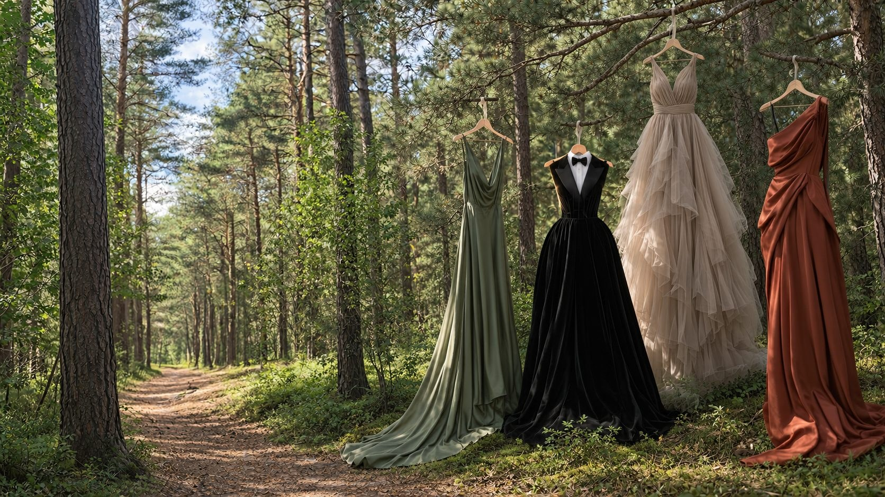
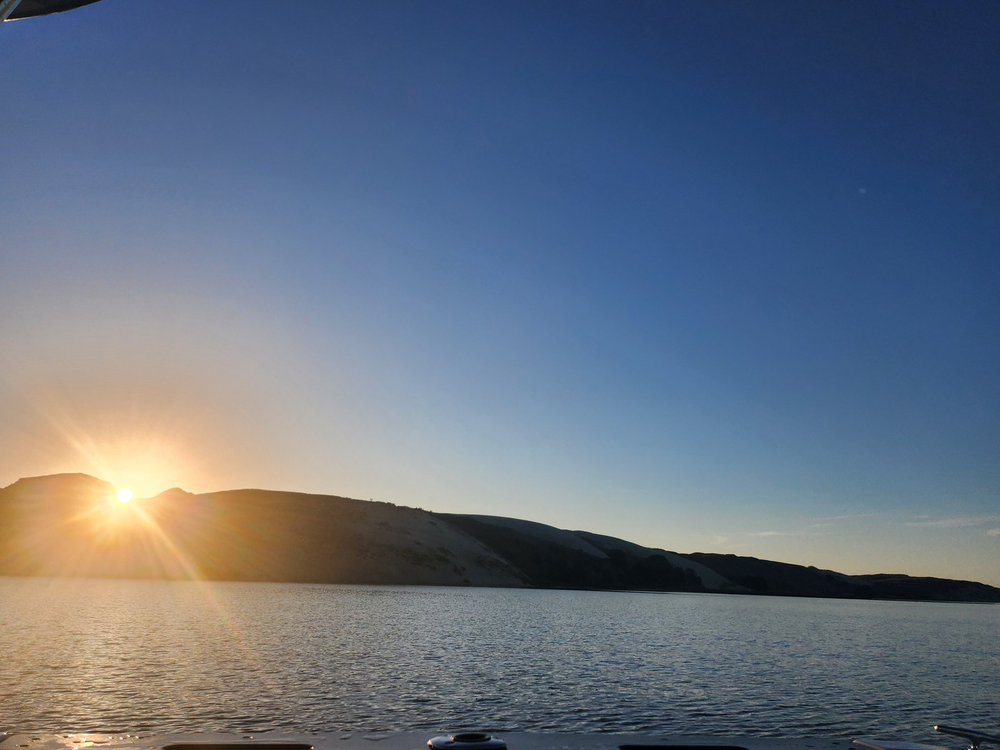
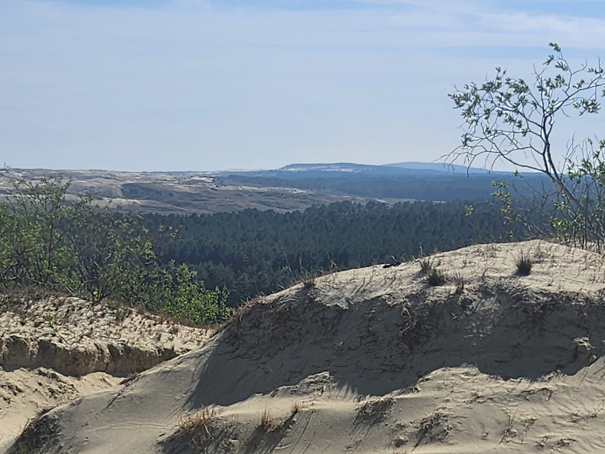
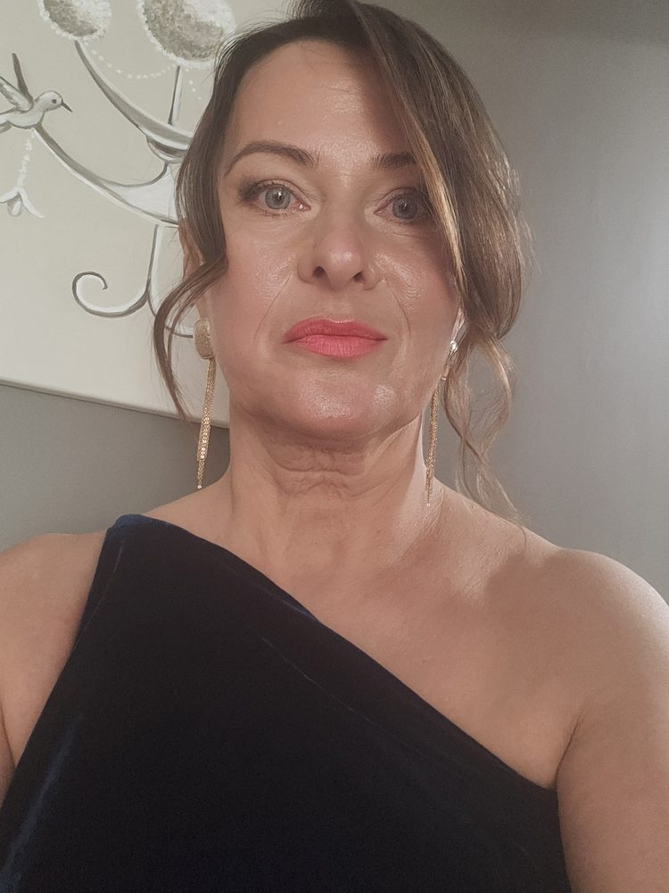

Socialinė iniciatyva
Mada, kuri palieka pėdsaką gamtoje ir sieloje
- Dovanojantis
- Įsigyjantis
- Būties takai
tampi mecenatu
kai dovanoji
◇Vardiniai drabužiai
Aukštos kokybės dizainerių kūriniai, tūnantys tavo spintoje. Jie nusipelno keliauti prasmingai.
✧Asmenybės drabužiai
Tavo mylimi ir brangūs daiktai, lydėję tave svarbiausiais gyvenimo momentais. Kiekvienas keliauja su tavo papasakota istorija.
Tavo vardas bus įamžintas take. Jei nori likti inkognito, bus parašyta: „Viena graži siela prisidėjo“.
Kas keliauja taku
Suknelės Kostiumai ir smokingai Paltai Sceniniai kostiumai Raudonojo kilimo suknelės Kasdieniai drabužiai su aura Rankinės
tiesi būties takus
kai įsigyji drabužį ar daiktą
Šie takai gims tavo dėka.

Kur keliauja lėšos
Už drabužius surinktos lėšos virsta būties takais gamtoje: vietomis, kur gali sustoti ir…
tiesiog būti


Kodėl tai kuriu
Esu Loreta, „Stiliaus tako“ įkūrėja. Man svarbu, kad tavo ypatingi drabužiai negulėtų spintose, o virstų vietomis gamtoje, kur žmonės atgauna jėgas ir vėl pajunta save. Pati ten randu ramybę, todėl noriu, kad ją rastų ir kiti.
„Mano stichija yra smėlio kopos. Man tai pats nuostabiausias atsipalaidavimas ir grožis.“
Todėl „Stiliaus takas“ jungia madą ir gamtą. Miške takas atsiranda tik tada, kai juo vaikšto žmonės. O žmonės vaikšto ten, kur jiems gera būti.
Nori prisidėti?
Nori išleisti drabužį į taką?
Parašyk man, ir kartu aptarsime, kaip jis keliaus taku.
Tapk „Stiliaus tako“ mecenatuGal turi visą savo drabužių kolekciją?
„Mados kelionė“ yra tavo drabužių paroda ir aukcionas gamtoje. Scenos kostiumai, vardiniai drabužiai ar visas garderobas, kuris mena tavo gyvenimo akimirkas. Renginį organizuojame mes arba tavo komanda, o lėšos skiriamos vienam iš būties takų, prie kurio lieka tavo vardas.
Parašyk manPažįsti žmogų, kuriam reikia atsikvėpti ar įsikvėpti?
Gal tai tavo mama, draugas ar kolega, kuriam trūksta jėgų ar džiaugsmo. Kai atsiras pirmieji būties takai, čia rasi, kur jie yra, ir galėsi pasikviesti jį kartu.
Palik pėdsaką
Pirmas aukcionas dar ruošiamas. Palik el. pašto adresą, ir pranešiu tau pirmiausia, kai įvyks aukcionas ar renginys.